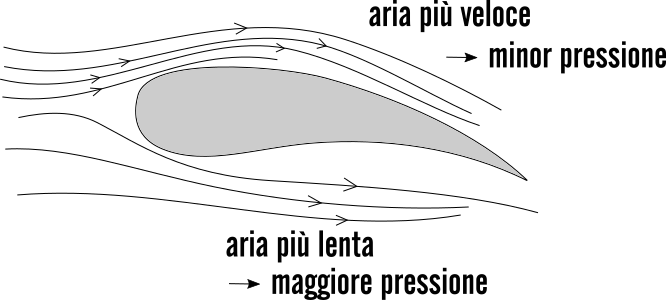

Per guadagnare altitudine, un velivolo deve generare abbastanza portanza per superare la gravità che sta cercando di portare l’aereo verso il basso, perdendo quota di conseguenza.
La portanza è generata dalle ali del velivolo, che generano una differenza in pressione tra la parte superiore ed inferiore dell’ala. Questa differenza in pressione risulta nella generazione di forza verso l’alto per guadagnare altitudine.
La quantità di forza risultante dipende da una varietà di fattori: dimensioni e forma delle ali, velocità del velivolo, e la densità dell’aria.
Per generare la portanza necessaria per guadagnare altitudine, un aereo deve superare la forza di resistenza causata dalla resistenza dell’aria. Anche questo dipende da vari fattori quali forma e dimensione del velivolo, la velocità e altitudine.
La forza di resistenza viene superata grazie alla spinta fornita dai motori, cioè i sistemi di propulsione. Questi ultimi sono importanti per l'aerodinamica poiché forniscono la spinta necessaria per il volo. L'efficienza dei sistemi di propulsione influisce direttamente sulla velocità e sulla manovrabilità del velivolo, che sono due elementi chiave nell'aerodinamica. La comprensione dei sistemi di propulsione e del loro impatto sull'aerodinamica del velivolo è quindi essenziale per garantire che il volo sia sicuro ed efficiente.
Per calcolare la portanza si usa la seguente formula:
L = Cl • ((ρ • V^2) / 2) • A, dove ‘Cl’ è il coefficiente, una variabile che viene determinata tramite esperimenti, ‘ρ’ (rho) è la densità dell’aria, ‘V’ è la velocità e ‘A’ è l’area delle ali.

 B-2 Sprit
B-2 Sprit